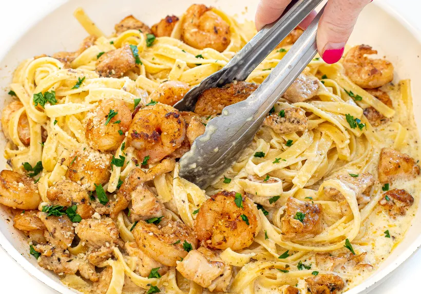
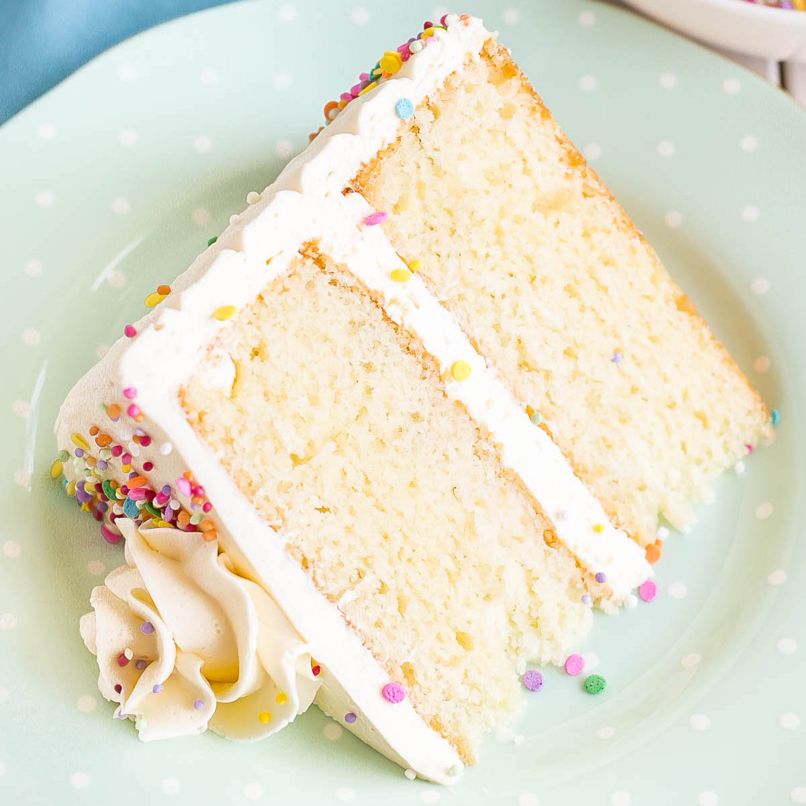

My Favorite Recipes
Creamy Chicken and Shrimp Alfredo
Prep Time:30 mins
Cook Time:25 mins
Servings:12

INGREDIENTS
- 1 (16 ounce) package dry trotolle pasta
- 4 tablespoons extra-virgin olive oil, divided
- 4 cloves garlic, thinly sliced
- 1 tablespoon dried basil
- ½ teaspoon red pepper flakes
- ½ teaspoon ground black pepper
- 2 pounds chicken breast, cut into strips
- 1 stick butter
- 1 (8 ounce) package cream cheese, cut into small pieces
- 2 cups milk, or more as needed
- 2 cups heavy cream
- 3 cups shaved Parmigiano-Reggiano cheese
- 3 tablespoons pesto
-
3 tablespoons sun-dried tomatoes packed in oil,
drained and chopped
- 8 ounces uncooked medium shrimp, peeled and deveined
DIRECTIONS
-
Fill a large pot with lightly salted water and bring to a
rolling boil; add 2 tablespoons olive oil.Stir in trottole and
return to a boil. Cook trotolle uncovered, stirring
occastionally, until tender yet firm to the bite, about
8 minutes.Drain and transfer trotolle to a bowl; set pot aside.
-
Heat remaining 2 tablespoons olive oil in a large skillet;
add garlic, basil, red pepper flakes, and black pepper.
Add chicken;cook and stir until browned, about 10 minutes
vanilla cake
Prep Time:10 mins
Cook Time:45 mins
Servings:10

INGREDIENTS
- cooking spray
- 2 ⅔ cups all-purpose flour
- 1 cup white sugar
- 1 tablespoon baking powder
- 1 tablespoon vanilla extract
- 2 pinches salt
- 3 large eggs
- ¾ cup milk
- ¾ cup vegetable oil
DIRECTIONS
-
Preheat the oven to 350 degrees F (175 degrees C).
Grease a 9-inch cake tin with cooking spray and line with
parchment paper.
-
Mix flour, sugar, baking powder, vanilla extract, and salt
together in a large bowl. Add eggs, milk, and vegetable oil;
mix by hand or beat with an electric mixer on low speed until
cake batter is smooth. Pour into the prepared pan.
Easy Fried Rice
Prep Time:5 mins
Cook Time:15 mins
Servings:8

INGREDIENTS
- ⅔ cup chopped baby carrots
- ½ cup frozen green peas
- 2 tablespoons vegetable oil
- 1 clove garlic, minced, or to taste (Optional)
- 2 large eggs
- 3 cups leftover cooked and chilled white rice
- 1 tablespoon soy sauce, or more to taste
- 2 teaspoons sesame oil, or to taste
DIRECTIONS
-
Place carrots in a small saucepan and cover with water.
Bring to a low boil and cook for 3 to 5 minutes. Stir in peas,
then immediately drain in a colander.
-
Heat a wok over high heat. Pour in vegetable oil, then stir in
carrots, peas, and garlic; cook for about 30 seconds. Add eggs;
stir quickly to scramble eggs with vegetables.